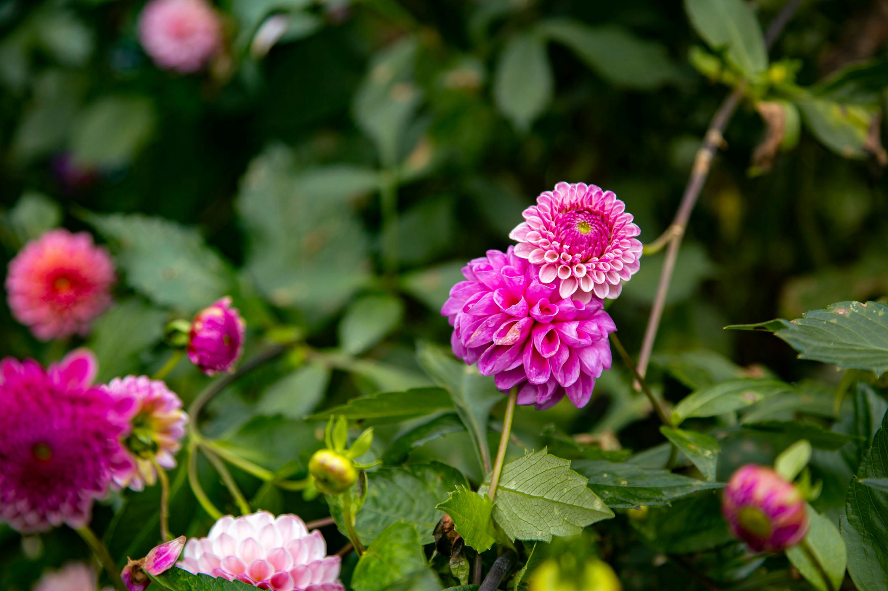

My Favourite Flowers
Below is a list of some of my favourite flowers.
-

- Dahlias
- Peonies
- Sunflowers
- Orchids
- Bleeding Hearts

This testing site is for my project for the First Nation's Technology Council
Below is a list of some of my favourite flowers.

I woke up at 5:30 a.m. I took my dog outside and then came back and made coffee. After I had my morning coffee, I cleaned my kitchen and swept and mopped my floors. I had another cup of coffee, then it was time for class. After class, I brought my grandmother to an appointment then I went shopping. Once I got home from shopping, I did laundry and tidied up the rest of my house. After cleaning, I went out for dinner then came home to watch tv and go to sleep.
As part of my work history, I worked as a Communications Coordinator. One of my tasks was to work with a consulting company and a couple of colleagues to develop a website for my organization. I spent many hours writing and editing content for the website but did not have the background for website development or the time to learn. I did learn the basics for updating content based off of layouts created by the consultants but decided I was interested in learning more. The website was for my former office and can be found at STSA Site. If you are interested in learning additional information about the history of the organization, it can be found here.